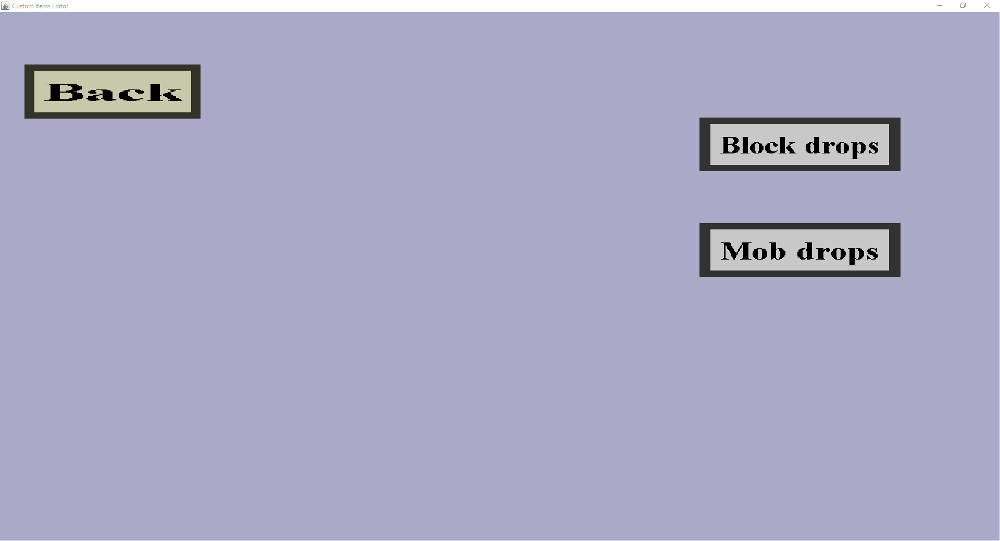

The drops menu is the root menu from which you can add drops to the game. It should look like this:
The menu consist out of the back button, the block drops button and the mob drops button.
The 'Back' button will remember the changes made and return you to the Item Set Edit Menu. Do note that the changes are not saved until the 'Save' button is pressed in the aforementioned menu.
Then there are the buttons for editing the drops. Each button opens their respective submenu. For more information, visit the respective pages.